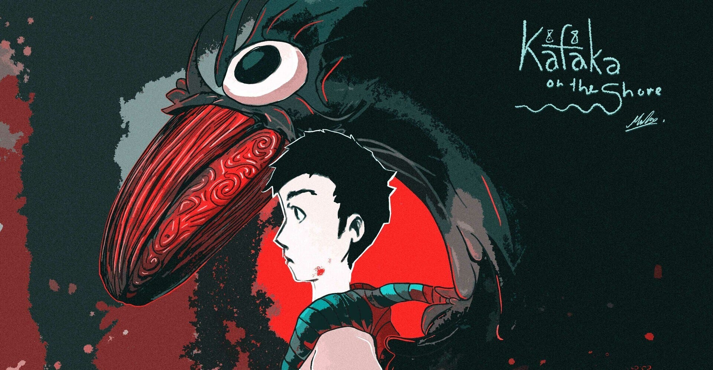

Kevin Ramirez
Kafka on The Shore: A Confused Review
“Sometimes, fate is like a small sandstorm that keeps changing directions” ~Crow
Just like fate, my understanding of the story is as consistent as Terry Goodkind being a fantasy author. I have only read half of the book, and i am both confused and yet entertained. Lets see why.
The story starts off in an interesting way. The main character of the story is stealing things from his father. But not in a way some might think. He's stealing it because he was running away. Okay it might be in a way that people think.
The boy had had enoug. He was sixteen. He lost his mother. His sister is in the wind. Knowing not of her fate, or even where she is. His father is of the absent one. The man drinks his life away. And the boy, the main character of our story, is talking to an imaginary crow. The quote above is from said Crow, and whether or not the Crow is really real, or simply a figment of the boys imagination is a mystery to me and you.
The Crow acted as the substitude parent/guide of sorts. He is there when the boy needs him. When he needs guidance, and the Crow answers with his wisdom. And basing my prior understanding(thought i might be wrong since i havent finished the book yet) the Crows wisdom comes from the dark recesses of the boys mind due to his large accumulation of his knowledge form the stacks of books he has read. Wow that was a mouthful. Enough Jungian subconcious talk, freud if you prefer, and lets back to the story.
Im going on for too long writing this so ill cut it short. The boy meets a semi adult woman, which he met after running away. He took the bus by the way. The young woman offered to shelter him for a day, and the boy agreed. Some things happened in that room between the two, and i wont get into it. Best to read it yourself.
They eventually part, with the boy still thinking of her even after the whole thing. But the author takes the story to an interesting turn. We meet the other character of the story. Both told from the old mans past and future. Narrating whatever happened to him during World War 2 and its strange happenings in their village. And narrating the eventuality of him in his old age. He is mentally stunted. Having a mind of a child. Living off from the stipends of the Mayor. He is happy with it. Content with it. Until things took a strange turn, when i learned he can talk to cats. Leading him down a path he never wanted, not expected.
The story is strange. Talking cats. Preschool students passing out in a forest in mass in world war 2. Fish falling from the sky. Other things faling from the sky which in turns injures some people. The MC being splattered with blood from the uknown. Yet it is also deep. The rapidness of a youth maturing as he is left alone in an unforgiving and uknown world. The decisions he has to make in order to survive. The poeple he meets that help him survive. As well as the fear of the uknown future that grips both the old man and the boy. Two people in complete contrast of their age, the gap between them decades in terms of age, and thousands of kilometers in distance.
Yet their fates still intertwine either way. Oh what does the future hold for the two. Lets read on to find out.